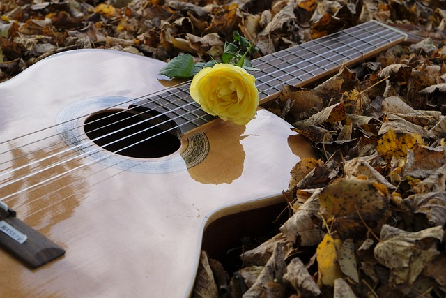
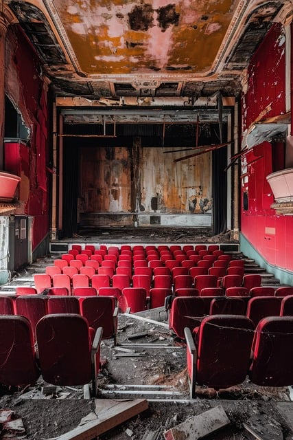

Ever since I was 3 years old, I have been taking dance classes. This past spring, I had my final dance recital at my studio and hung up my tutu to focus more on school. However, this part of my life will always define me and I'll always have a love of dance.
The first instrument I really learned how to play was the flute. I played it in my fifth grade band, then put it down forever. I honestly don't think I will ever know how to play that instrument again. Despite this, in middle school another instrument came up in music class: the ukulele. I immediately fell in love and had to have one. Once I got my hands on my own ukulele from Amazon.com, I played it religiously, up and through at least 3 years until the pandemic. During this time, my brother gave me his old guitar and I took up learning how to play it. These days, about 4 years later, the guitar is my primary instrument. My love of the ukulele and guitar have always pushed me to create songs and write music for what I'm feeling and when. I have so many time capsules of old songs that are so fun and interesting to return to and dissect how I was feeling in those certain times.
I've always had a love of singing. This majorly ties into my love of creating and writing music on my guitar. Additionally, it ties into my love of performing, musical theatre, and acting.
My love of theatre and acting basically stems back to birth. I've always been one for the dramatics and have always had a very vibrant means of communication and expression.
I started my acting career in high school and did 8 plays during that time. From there, I continued this passion through plays here at McHenry County College. The ensemble and the productions are so much fun to be a part of, and the expression of bringing different characters to light is a feeling like no other.
The reason I went with this sort of decrepit image of a theatre in particular is because I also have an interest in abandoned buildings and areas. I'm not too much into the exploring game, per say, but I love watching videos of others doing it!
Honestly, I'm pretty well-rounded in my artsyness. The reason I am in this class is because I am seeking a graphic design route in college, then hopefully a career. This class is on the course outline for Roosevelt University at the MCC University Center. I'm really excited to learn about code and see where it fits into my path.